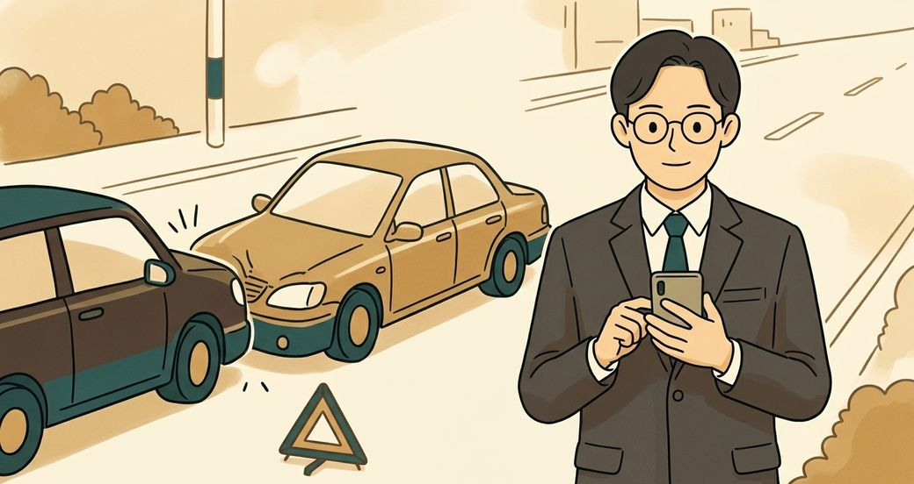

事故現場
別慌，我陪你一步一步處理。
我的位置
尚未取得位置
取得位置後，方便通報與救援。這個地點與時間會被記下來，之後移動也不會被蓋掉。
地下停車場、隧道、室內常常定位不到。寫得出路名或路口就夠報案用。
現場處理
還是不知道怎麼做嗎？歡迎聯絡我們拍照存證
對方可能會先離開，資料先問到手；車輛移動前先拍照。
對方資料
拍照清單
調解與求償
不用今天填完，填多少就存多少。
把有單據的先算出來
還沒有填入金額
手邊有幾張收據就先填幾張，之後隨時可以再補。
有憑據的小計
$0
只填你拿得出單據的金額。這份小計的力量，在於每一筆都有收據、估價單或薪資證明可以攤在桌上。
你可能想知道
要注意的期限提告、鑑定 6 個月內，求償 2 年內›
調解有三條路區公所調解、法院調解、直接提告›
精神慰撫金沒有價目表，怎麼抓比較踏實›
你受的苦是真的，只是它沒有價目表。
法院是就個案衡量的，同樣的傷勢判下來可以差上好幾倍。所以這裡不會給你一個「大概多少」—— 那種數字是猜的，而拿著猜來的數字上調解桌，開太高談不攏、開太低自己吃虧。
法院會看這些
比較踏實的做法，是去查類似案件的實際判決。真實判決在調解桌上是能攤開來講的東西，比自己開一個數字有力得多。
查詢類似案件的判決關鍵字可以用「車禍 慰撫金」加上你的傷勢名稱。需要網路連線。
調解前，一樣一樣準備
以上為一般性資訊整理，不構成法律意見。個案認定請諮詢律師。若擔心費用，可洽法律扶助基金會申請扶助。